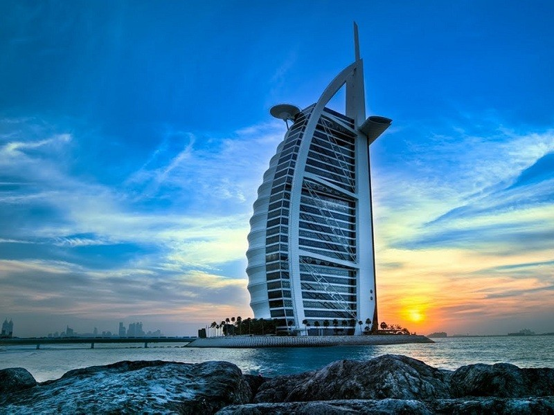

Ici et là
Pour votre séjour à Dubaï il y a des hôtels tels que Burj-Al-Arab, Atlantis, etc.
Aussi il y a Dubaï la plus grande marina au monde, un quartier résidentiel huppé. Cette marina a aussi des cafés élégants, des enseignes de renom en font le prestige.
Pour une visite de la ville, nous vous suggérons la tour Burj-Khakifa qui est la plus grande tour jamais construite par les hommes. Elle fait deux fois et demi la hauteur de la tour Eiffel à Paris.

L’île des fêtes et des plaisirs
Il y a beaucoup de d’événements parmi lesquels on peut citer le Colour Run où les participants pourront courir, marcher ou même danser dans une ambiance fun et sur un parcours de 5km; la Design Week de Dubaï pour les fan de golf, le BAO music and dance festival pour les fans de musique, de la danse; la mode, la restauration, la culture et les divertissements.
Aussi, il y a des bars panoramique qui vous offre une vue imprenable sur la ville; Des endroits parfait pour prendre un thé, un verre d’alcool.

Le Global Village est un parc de festival permettant aux visiteurs de toutes les cultures de se réunir pour découvrir les autres pays du monde en seulement quelques heures.

Shopping
À Dubaï, le loisir numéro un, c’est le shopping. L’avantage, c’est que c’est une activité qu’on peut faire gratuitement si on se contente de faire du lèche vitrine. Et au Dubaï Mall, ça vaut le coup ! Avec 1,1 million de m², 1200 magasins et 160 restaurants, c’est le plus grand centre commercial au monde. A mi-chemin entre un centre ville climatisé et un parc d’attraction, c’est un lieu emblématique de toute la démesure de l’Emirat. Pour se faire une idée du gigantisme des lieux, quand on arrive en métro à la station << Dubaï Mall >>, c’est pas moins de sept tapis roulant qu’il faut franchir pour entrer dans le centre commerciale.

Une ville verte
Dans le plus grand parc floral se niche un jardin gigantesque dans un cadre apaisé et surtout très coloré. Il couvre une superficie de 8 hectares et regorge d’une remarquable diversité floral. A chaque pas, des compositions de fleurs de couleurs et de formes variées. Ouvert chaque année durant sept mois du 1er Novembre au 31 Mai, le jardin laisse découvrir une nouvelle face à ses visiteurs au travers d’un nouveau design. Pour toutes les occasions de festivités, les couleurs et compositions florales du jardin sont actualisées selon les thèmes. Comme l’indique son nom, il s’agit véritablement d’un lieu où tout semble être un miracle. Et bien qu’il soit installé en plein désert, il bénéficie d’un système d’irrigation efficace au goutte-à-goutte.